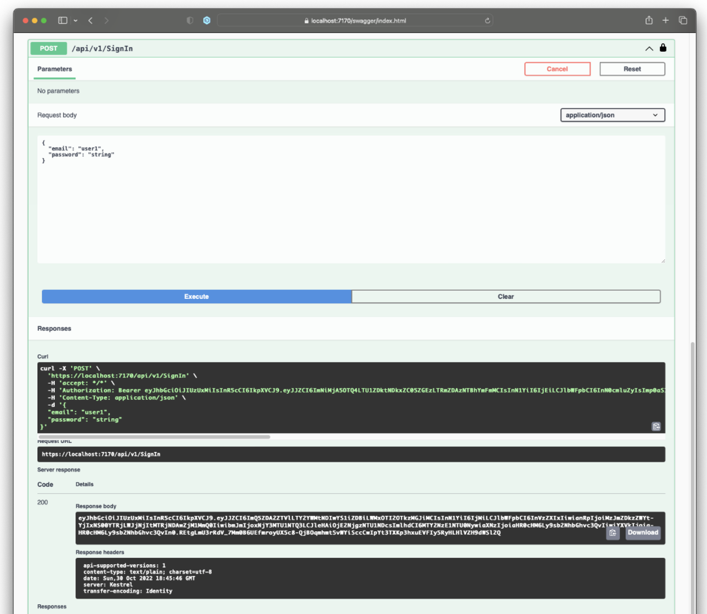
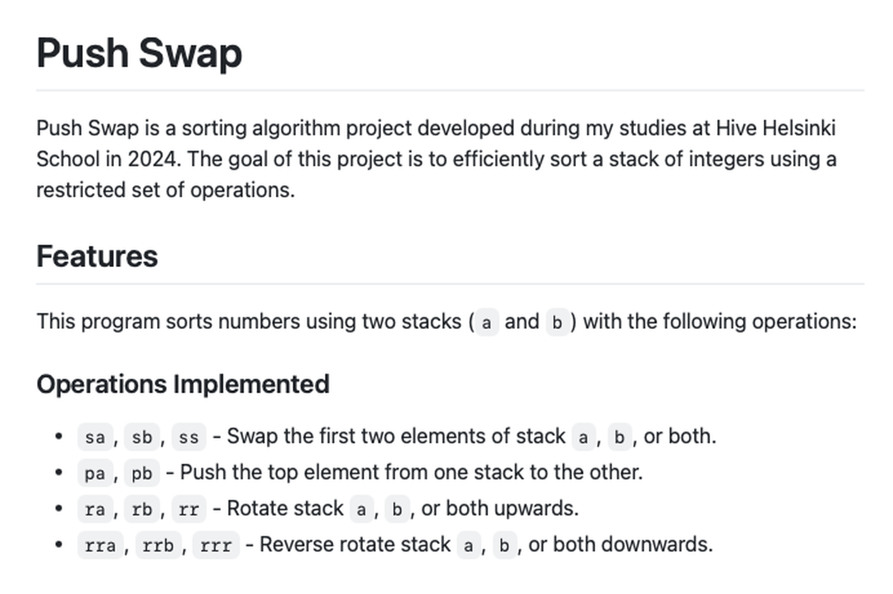

My Projects
Project of my own website-portfolio
Previous version of this website

ToDo API
TodoAPI provides the backend for a Todo application.
libft (Hive - 42 schools)
Libft is a custom C library that reimplements standard C functions
printf() (Hive - 42 schools)
printf() is a custom implementation of the printf function in C

push_swap (Hive - 42 schools)
Push Swap is a sorting algorithm project
minitalk (Hive - 42 schools)
Project that allows communication between two processes using signals in C.
Data Structures and Methods
Project implements fundamental data structures and their associated methods in Python.
moovSound
Python project that transforms motion captured from a camera or video into generative soundscapes.
Personal landing page
Project of this website
CSS/SASS project
Styled replica of existing website
Kulkurin Antiikki landing page
Personal landing page of small antique business